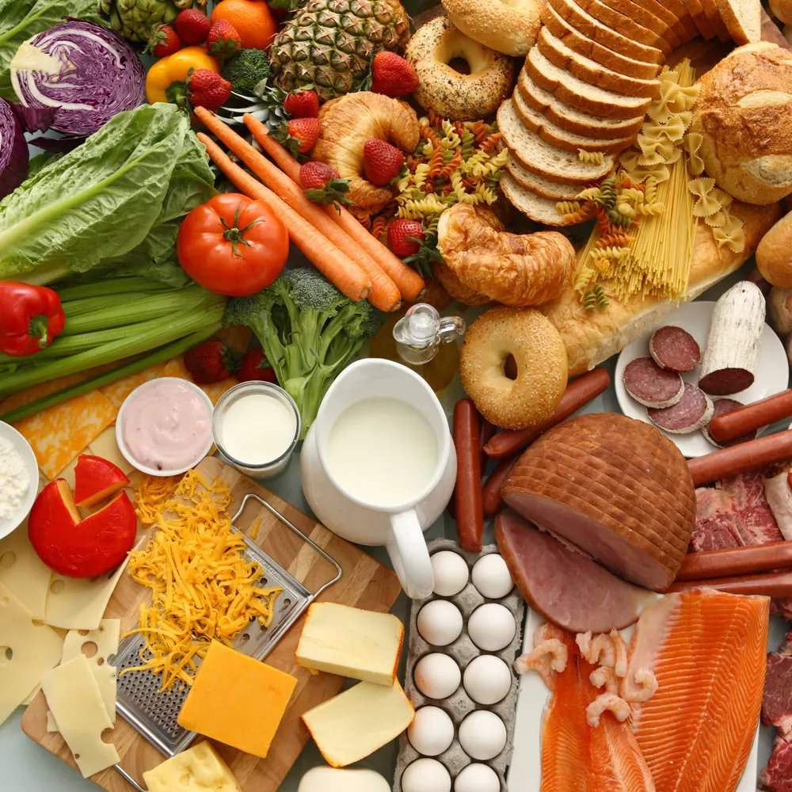

Our Story
Founded in 2020, Fresh Bites began as a small family business with a simple mission: to bring the freshest, highest-quality food and beverages directly to your table. What started as a local farmers market stand has grown into a trusted online destination for food lovers everywhere.
We believe that everyone deserves access to premium, fresh ingredients that not only taste amazing but also support sustainable farming practices and local communities.
10,000+
Happy Customers
500+
Premium Products
50+
Local Suppliers
